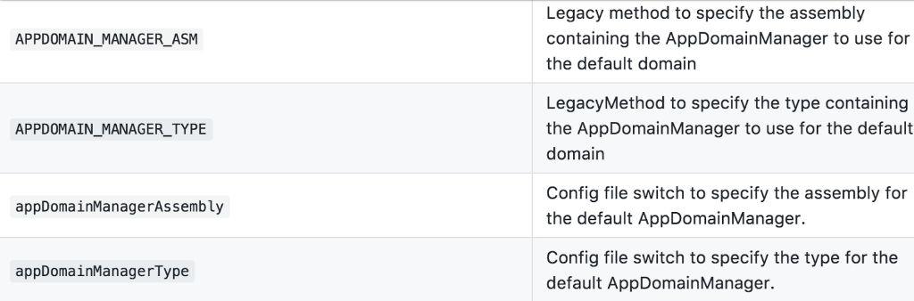

CLR:
The full name Common Language Runtime is a runtime environment that can be used by many programming languages.
The CLR is the main execution engine of the .NET Framework. One of its functions is to monitor the running of the program:
- Programs that run under CLR monitoring are "managed" code
- An application or component that is not running directly on the bare metal under the CLR is an "unmanaged" code
For programs under CLR monitoring, the initialization process of program startup can refer to the following link:
One of the interesting things I stumbled on was this reference to CLR tuning:
Of particular interest I saw these environment variables that can be set. You can also set these in an app.config file.

AppDomain Managers are interesting in that they setup the environment, before your .NET app runs.
I'll keep this short. You can manipulate the runtime, by getting your code to execute prior to the application.